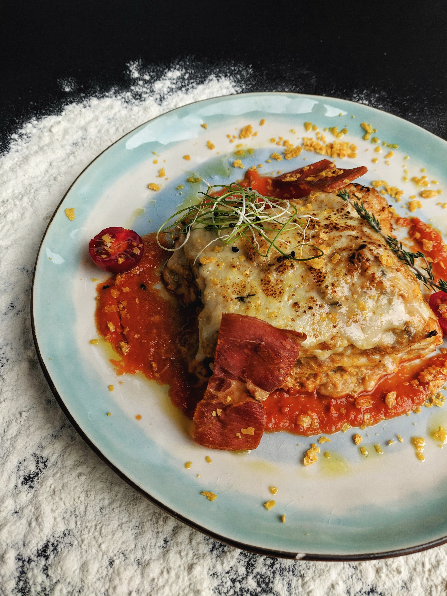

This chicken paprikash can be made either in an Instant Pot® or on the stovetop. No matter which method you use, it will be cooked in less than 30 minutes! Feel free to use a blend of paprika--I used 3 different types: smoked paprika, sweet paprika, and regular paprika.
This recipe feeds 8 people